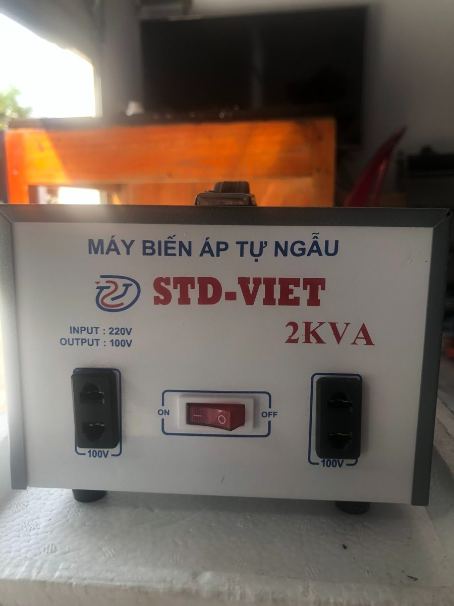
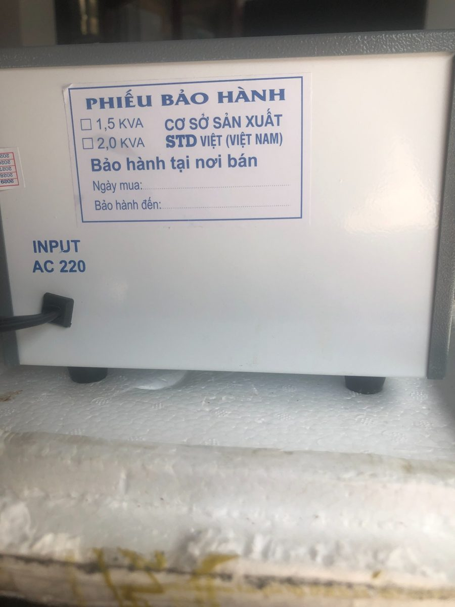
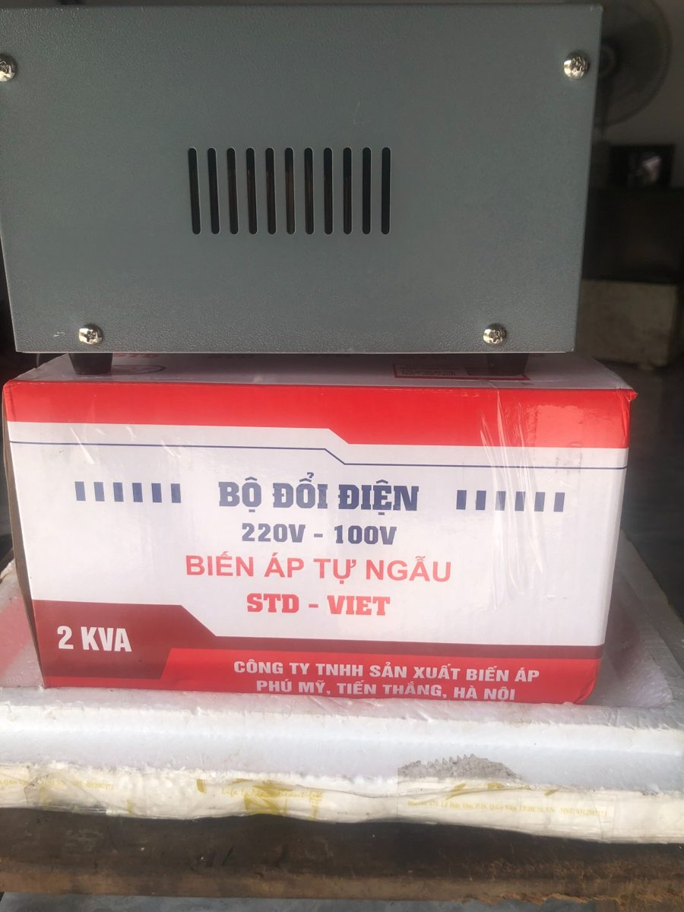
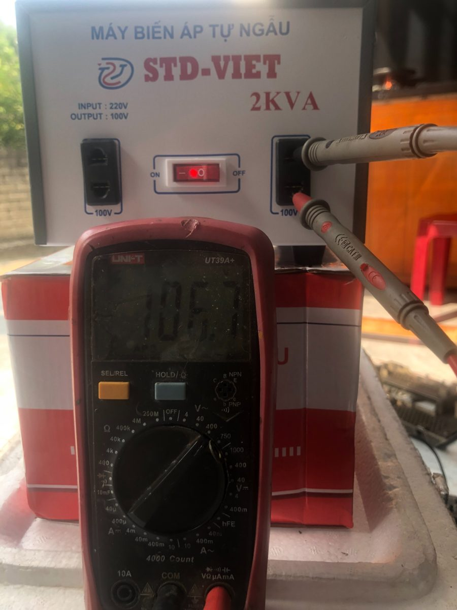
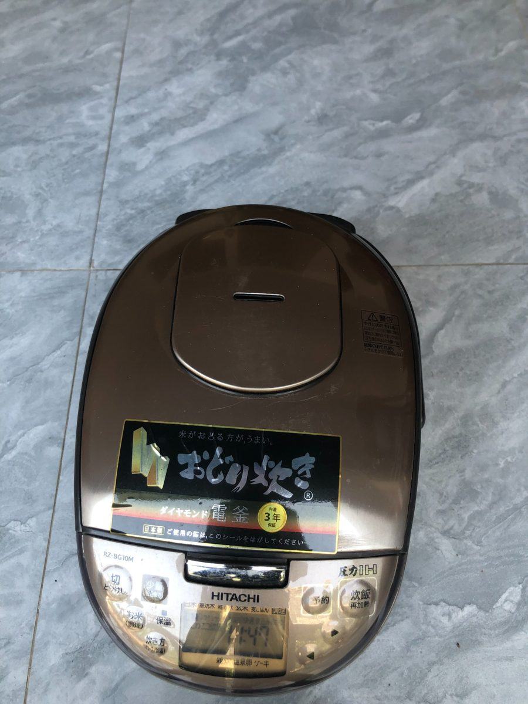
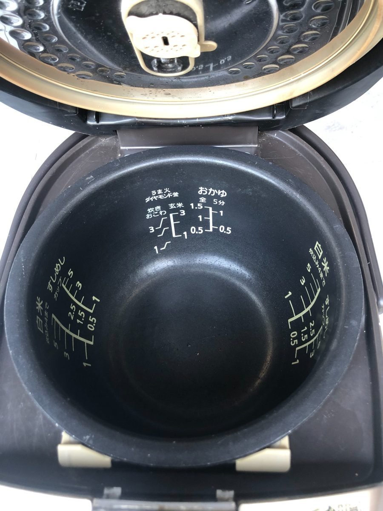

Bộ đổi nguồn STD-VIET 2KVA 220V–100V cho thiết bị điện nội địa Nhật
Tôi vừa nhập thử một bộ đổi nguồn STD-VIET để giới thiệu đến những khách hàng đang sử dụng nồi cơm điện và thiết bị nội địa Nhật dùng điện 100V.

Thông số trên sản phẩm
| Loại máy | Máy biến áp tự ngẫu STD-VIET |
| Điện áp đầu vào | AC 220V |
| Điện áp đầu ra | AC 100V |
| Công suất danh định ghi trên nhãn | 2 kVA |
| Đầu ra | Hai ổ cắm 100V |
| Xuất xứ thể hiện trên bao bì | Việt Nam |


Kết quả kiểm tra ban đầu
Tôi đã dùng đồng hồ đo điện áp tại ổ cắm đầu ra khi chưa kết nối tải. Trong hình ảnh kiểm tra, đồng hồ hiển thị khoảng 105,7V. Đây chỉ là số đo không tải, chưa phải kết quả đánh giá độ ổn định khi vận hành với nồi cơm.

Giới thiệu cùng nồi cơm điện Nhật Hitachi
Tại cửa hàng, tôi đang có nồi cơm điện nội địa Nhật Hitachi RZ-BG10M. Dưới đây là ảnh thật để các bạn xem hình thức và lòng nồi. Trước khi sử dụng với biến áp, cần kiểm tra nhãn điện áp và công suất của chính chiếc nồi.


Video giới thiệu thực tế
Video giữ lời giới thiệu của người bán; phần cuối có thêm ảnh minh họa bộ đổi nguồn và nồi cơm. Các thông số kỹ thuật trong bài dựa trên nhãn sản phẩm và kiểm tra ban đầu.
Tại Yên Bái · Tư vấn mua bán, sửa chữa thiết bị điện gia dụng
Điện thoại: 0858 965 965 · Nhắn tin qua Facebook
Có sự hỗ trợ phân tích của AI.